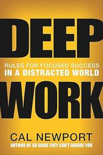
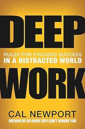
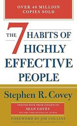
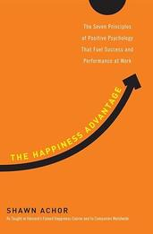
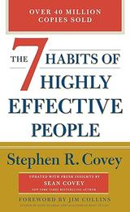
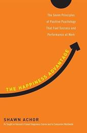

 




Books are powerful tools that can transform lives, especially when it comes to cultivating self-discipline, sharpening focus, and leading a happy and fulfilling life. Here's how:
Books often serve as mentors, offering wisdom from those who have mastered the art of self-discipline. Whether it's classics like Atomic Habits by James Clear or The 7 Habits of Highly Effective People by Stephen Covey, these works provide actionable strategies to develop routines, overcome procrastination, and build resilience. They remind readers that self-discipline is not innate but a skill honed through consistent effort.
Reading itself is an exercise in focus. Immersing oneself in a book requires attention and concentration, helping readers practice mindfulness and block out distractions. Moreover, books on productivity and mental clarity—such as Deep Work by Cal Newport—teach techniques to cultivate sustained focus in a world full of interruptions.
Books open doors to new perspectives, teaching readers how to embrace gratitude, find purpose, and live authentically. Works like The Happiness Advantage by Shawn Achor or Man's Search for Meaning by Viktor Frankl explore the psychology of happiness and fulfillment, offering insights that can lead to a more meaningful life.
Books are more than just words on paper—they are companions on the journey to personal growth. They provide knowledge, inspiration, and practical tools to help individuals navigate challenges and achieve their goals. By investing time in reading, people can unlock their potential for self-discipline, focus, and lasting happiness.
So pick up a book today—it might just be the catalyst for transforming your life!